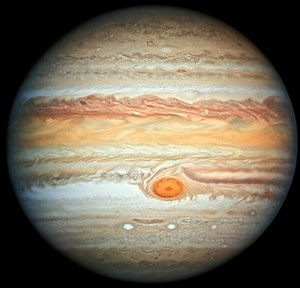

Планети Сонячної системи: особливості
Меркурій
Здійснюючи повний оберт навколо Сонця лише за 88 днів, Меркурій є найближчою до Сонця планетою, а також найменшою, лише трохи більшою за земний місяць.

На Меркурії відбуваються різкі зміни денних і нічних температур. В день 450 C, що досить гаряче, щоб розплавити свинець. Тим часом на нічній стороні температури опускаються до мінус мінус 180 C.
- Відкриття: Відомий стародавнім грекам і його видно неозброєним оком
- Названий на честь вісника римських богів
- Діаметр: 3078 миль (4878 км)
- Орбіта: 88 земних днів
- День: 58,6 земних днів
Венера

Друга планета від Сонця – Венера – за розміром як Земля. Радіолокаційні зображення під її атмосферою показують, що на її поверхні є гори та вулкани. Через свою густу токсичну атмосферу, яка складається із сірчанокислих хмар, Венера є надзвичайним прикладом парникового ефекту. На ній навіть спекотніше ніж на Меркурії. Середня температура на поверхні Венери становить 900 F (465 C).
- Відкриття: Відомо стародавнім грекам і видно неозброєним оком
- Названа на честь римської богині любові та краси
- Діаметр: 12 104 км
- Орбіта: 225 земних днів
- День: 241 земний день
Земля
Третя планета від Сонця, Земля – це водний світ, де дві третини планети вкрито океаном. Це єдиний світ, у якому відоме існування життя.Земна атмосфера багата на азот і кисень. Земля обертається навколо своєї осі на 1532 фути в секунду (467 метрів на секунду) – трохи більше 1000 миль на годину (1600 км / год) – на екваторі.
- Англійська назва The Earth – походить від “Die Erde”, німецького слова “земля”.
- Діаметр: 12760 км
- Орбіта: 365,24 дня
- День: 23 години 56 хвилин
Марс
Четверта планета від Сонця – Марс, і це холодне, схоже на
пустелю місце, вкрите пилом.
Цей пил виник із оксидів
заліза, надаючи планеті знаковий червоний відтінок.
Планети Сонячної системи: Марс
Марс поділяє подібний на Землю: він скелястий, має гори,
долини та каньйони, а також на ньому мають місце шторми
та пилові бурі.
Наукові дані свідчать про те, що колись мільярди років тому
Марс був набагато теплішим, вологішим світом.
Вчені також вважають, що на древньому Марсі були умови для підтримки життя,
такого як бактерії та інші мікроби.
- Відкриття: Відомий стародавнім грекам і йоговидно неозброєним оком
- Названий на честь римського бога війни
- Діаметр: 6717 км
- Орбіта: 687 земних днів
- День: Трохи більше одного земного дня (24 години, 37 хвилин)
Юпітер

П’ята планета від Сонця, Юпітер – це гігантський газовий світ, який є наймасивнішою планетою в нашій Сонячній
системі – більш ніж удвічі масивнішою, ніж усі інші планети разом узятих.
Юпітер
Його закручені хмари барвисті завдяки різним типам газів. І
головною особливістю його хмар є Велика Червона пляма, гігантська буря шириною
понад 10 000 миль. Протягом останніх 150 років вона лютує з швідкистю понад 400 миль/год. Юпітер має сильне
магнітне поле,
і, маючи 75 місяців, він трохи схожий на мініатюрну Сонячну систему.
- Відкриття: Відомий стародавнім грекам і його видно неозброєним оком
- Названий на честь володаря римських богів
- Діаметр: 138822 км
- Орбіта: 11,9 земних років
- День: 9,8 земних годин
Сатурн
Шоста планета від Сонця, Сатурн, відомий найбільше своїми кільцями.
Сатурн
Кільця склдаються з льоду та гірських порід, і вчені ще не впевнені, я
к вони утворилися. Сам Юпітер
– це газоподібна планета та складається переважно з воденю і гелію.
- це чудова планета
- дуже багато супутніків
- має великі кільця
- Відкриття: Відомий стародавнім грекам і його видно неозброєним оком
- Названий римським богом землеробства
- Діаметр: 120 900 км
- Орбіта: 29,5 земних років
- День: Близько 10,5 земних годин
Уран

Сьома планета від Сонця , Уран – дивна куля. У ньому є хмари з сірководню, тієї самої хімічної речовини, яка змушує гнилі яйця так пахнути. Уран Він обертається зі сходу на захід, як Венера. Але на відміну від Венери або будь-якої іншої планети, його екватор знаходиться майже під прямим кутом до своєї орбіти – в основному він обертається на боці.
- Відкриття: 1781 року Вільямом Гершелем (спочатку ця планета вважалася зіркою)
- Названий для уособлення неба в античній міфології
- Діаметр: 51 120 км
- Орбіта: 84 земних роки
- День: 18 земних годин
Нептун

Восьма планета від Сонця, Нептун розміром приблизно з Уран i відомий сильним вітром. Нептун далекий і холодний. Нептун Нептун був першою планетою, яку вичислили за допомогою математики, до того, як її візуально побачили. Нептун приблизно в 17 разів масивніший за Землю і має кам’янисте ядро.
- Відкриття: 1846 року
- Названий на честь римського бога води
- Діаметр: 49530 км
- Орбіта: 165 земних років
- День: 19 земних годин